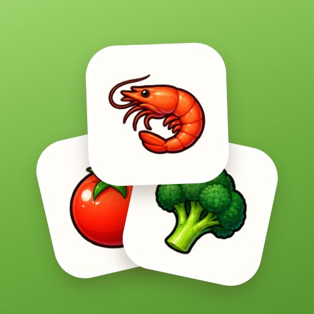
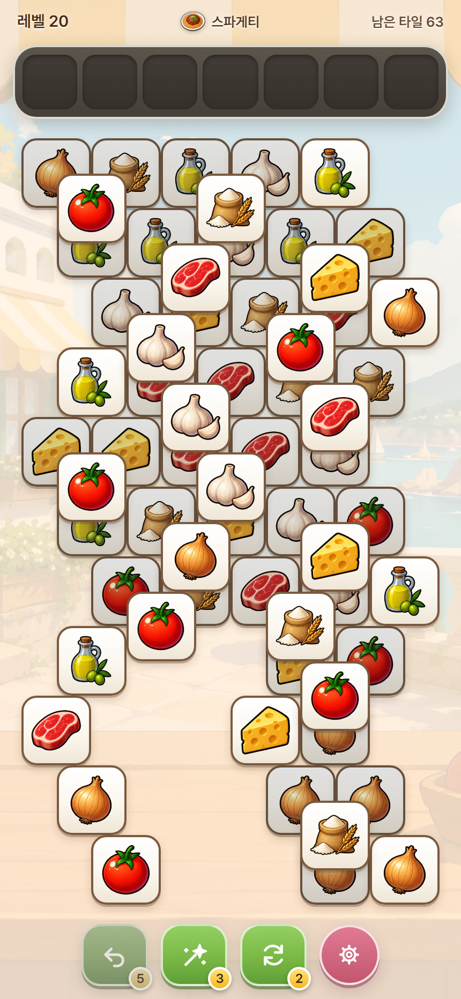
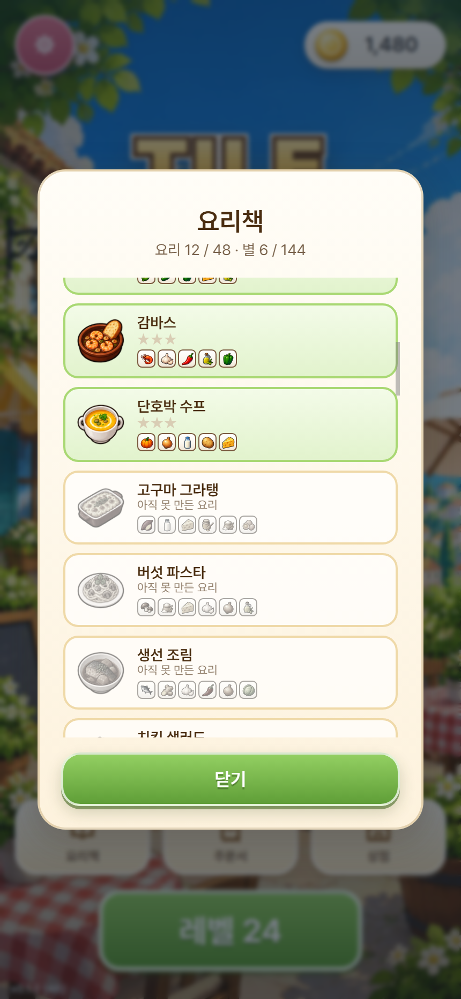
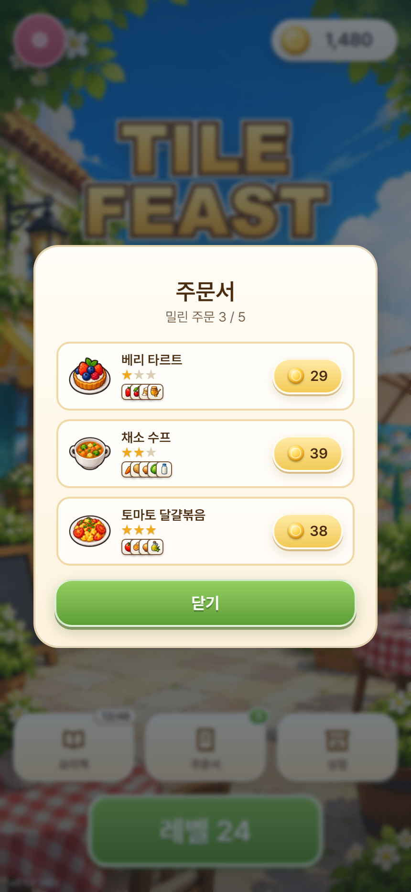

48가지 요리책
레벨을 깰 때마다 새 요리를 배웁니다. 요리책이 차는 걸 보는 재미가 있습니다.
요리 타일 퍼즐

같은 재료 3개를 맞춰 요리를 완성하는
아기자기한 타일 퍼즐.
쌓인 재료 타일에서 같은 것 세 개를 찾아 맞추세요. 판을 다 비우면 요리 한 접시가 완성됩니다. 시간 제한은 없습니다.
칸은 일곱 개뿐입니다. 무엇을 먼저 집을지 정하는 게 실력입니다.
레벨을 깰 때마다 새 요리를 배우고 요리책을 채웁니다. 배운 요리로 밀린 손님 주문을 내주면 코인이 쌓입니다.
시간에 쫓기지 않고 느긋하게 생각하며 푸는 판입니다.



레벨을 깰 때마다 새 요리를 배웁니다. 요리책이 차는 걸 보는 재미가 있습니다.
배운 요리로 밀린 주문을 내주면 코인이 쌓이고, 같은 요리를 여러 번 낼수록 별이 오릅니다.
초반은 편하게 시작하지만 뒤로 갈수록 재료가 늘고 판이 높이 쌓입니다.
쫓기지 않습니다. 짧게 끊어서, 느긋하게 생각하며 풀 수 있습니다.